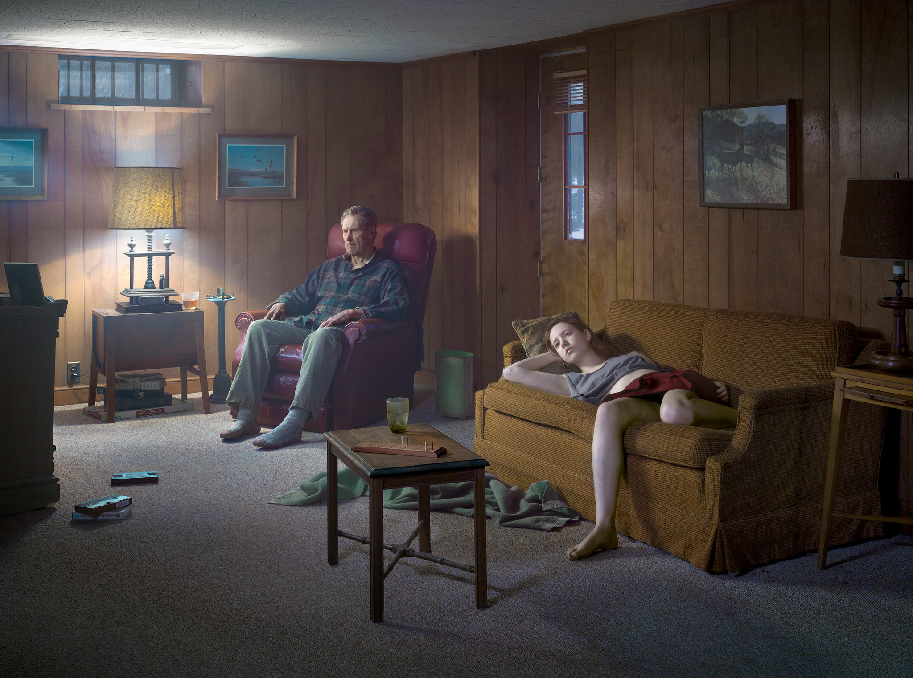
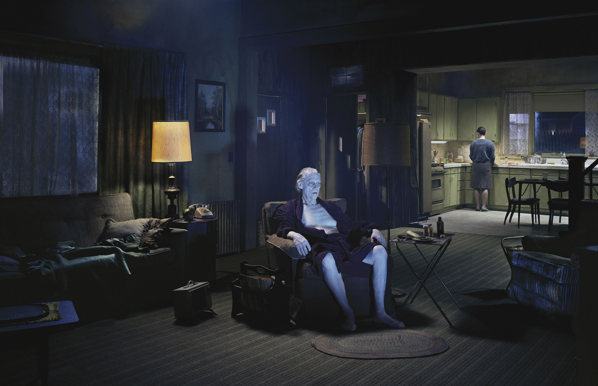
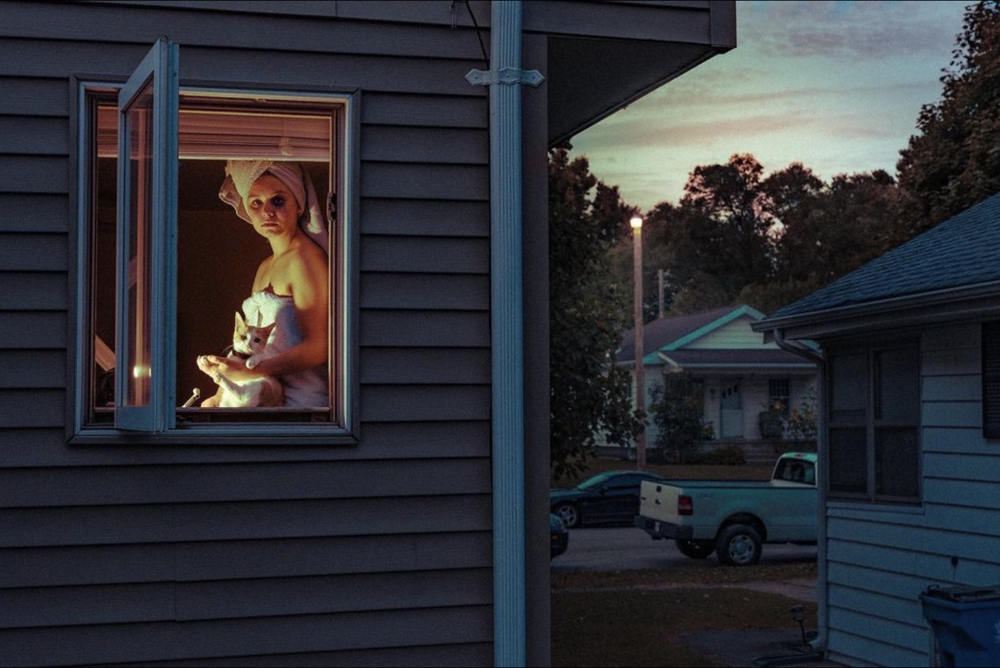
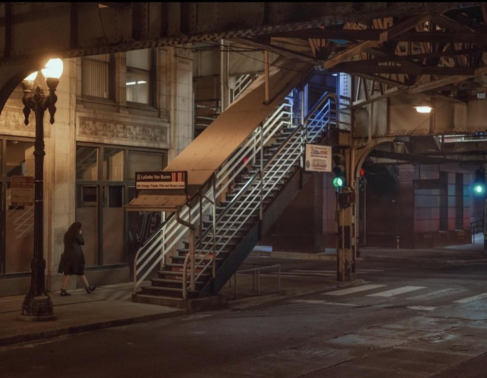
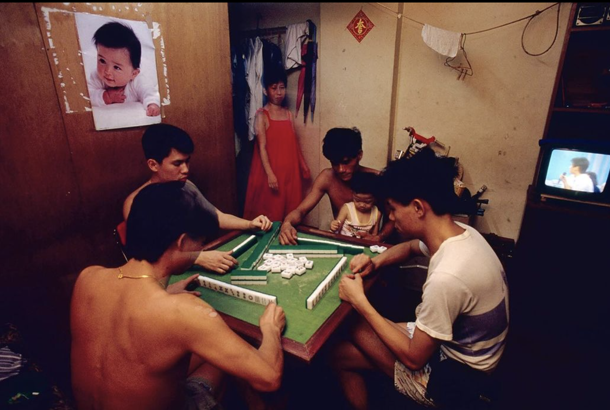
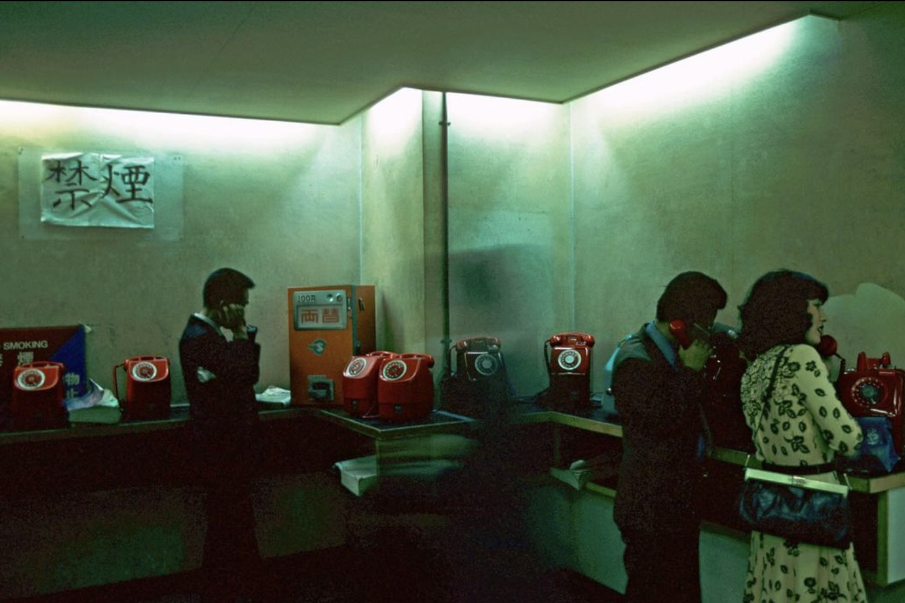
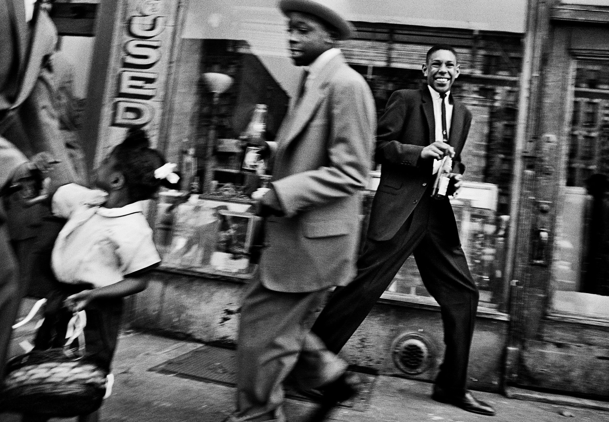
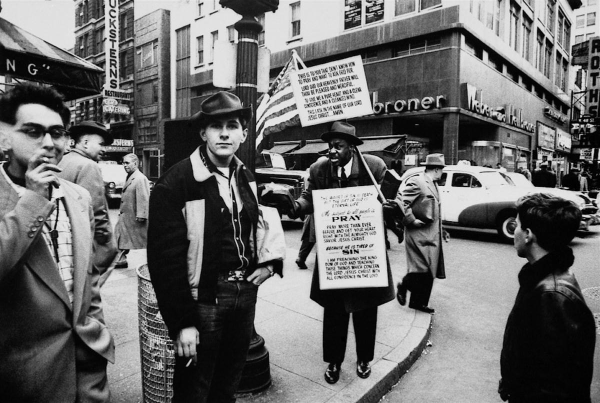

Photography
Here, I am looking to show examples of my favourite photography. This is an interesting area of the
portfolio that I am creating because I am a photographer first and foremost. Other mediums can inspire my
photography just as much or even more in some ways, for instance music and film is more likely to be
what gets me up and wanting to make something. But, my influences in photography are the most visible when it
comes to the work I make myself.
I have been told my univeristy tutors and friends that my work reminds them of someboody elses on
a few occasions, and usually these comparisons are my direct influences. In some ways, I struggle to push
away from their influence, but throughout my work on Unit 10, I have used AI to bring something different
into the style of work that I am typically such a fan of. I hope that the influences remain
visible, but I also hope that I am creating work that is able to get away from the grip of the work that
influences me.
Gregory Crewdson
Gregory Crewdson has served as my biggest inspiration in photography for a very long time, for around 7 years.
This photographer is the one who my work is most clearly influenced by. His work has largely impacted my
taste in photography.
His work is uncanny, cinematic, elegant and mysterious. His work evokes feeling and emotion more than
any photographer that I have ever seen, and his ability to create a new world, or at least a very distant
one, is second to none.
His images feel like they were taken in a different time, but not one I could put a finger on. Many of his images
could portray a dystopian future, or a lonely individual from the past. They are all mysterious, and every one
of his images feel like they are missing a lot of information. You don't know what's going on, but you are
overwhelmed with the strong feelings that his images create in the viewer.
I use his work as a baseline for what I try to achieve visually, and sometimes I feel like I get close but
even then, it has only happened a few times in my life, and they still miss the incredible finish that his work
so consistently produces.
'My pictures must be beautiful, but that beauty is not enough. I strive to
convery an underlying edge of anxiety, of isolation, of fear.' - Gregory
Crewdson (Crewdson, 2014)


(Crewdson and Moody)
Joey Miller
Joey Miller is a photographer that, like me, is a child of Gregory Crewdson.
He is one of my favourites because his work has it's own feel to it, he isn't an exact clone by any
means. This is also something that I would like to achieve, I am working on making my photography unqiue
but within the realm of this style that I love so much.
His composition is notable, and his use of post production has been particularly inspiring. I don't
actually look to copy his editing style, because when he really utilises it, I don't usually find it very
interesting. However, it spurred me to consider using strange and eccentric edits in my work.
With Photoshop now bringing in Generative AI, something that was not an option when I started my degree,
I have been able to utilise very strong edits that don't look cut-out in any way with ease. This has helped me
to bring in a surrealist feeling to my work that also feeds my obsession with Salvador Dali. His use of
heavy edits before AI inspired me in the past but I could rarely execute the skillset, and I felt that he
wasn't utilising it well either. Nevertheless, the inspiration stuck in my head for years and now I am
able to play out that inspiration in my final project of my degree.
'I have an obsession with trying to tell stories with my photography' -
Joey Miller (Miller, n.d.)


(Miller)
Greg Girard
I like this work because it possesses and exhibits a strong visual and compositional capability.
He almost entirely shoots on film and that definitely impacts the style. I generally don't shoot film
but I love all film formats and I really care about the editing process at the end of a shoot because
I have always had a taste for the filtering tones on different kinds of film.
His work is a great benchmark for me to decide if my editing decisions are impactful. Even if
they are supposed to be different, his work helps to give me a tip on whether my retouching makes the photo
feel alive and interesting. Even if it's clean, the photograph goes beyond the content in fine art.
What is the overriding tone of the photo? Is the entire image tinted, and if so how much? Which colours should
I mix to create something that is interesting but not distracting, it should simply add to the photo.
Work like Greg Girards is very useful to reminding me where I am supposed to be with these decisions that
make or break a photograph.
“The Way The City Looks In Photographs Is Its Own Reality” - Greg Girard (Đào, 2020)


(Girard)
William Klein
William Klein was a street photographer in the 1950s and onwards.
Although all of his work is black and white, and almost none of mine is, Klein has been a huge inspiration to
me in my life. When I was 16, 9 years ago, I watched a documentary about him. Because of him, I studied photography
at college and I am now completing a degree. I hold multiple freelance jobs in the field of photography, and it
is all because of how he first inspired me as a teenager.
My base in photography has always been street photography, and it still is. I try to visually take inspiration from
the likes of Crewdson and Joey Miller, but in a style that isn't always staged like theirs is, and is based around
street photography. My woork usually centres around quieter streets, whereas Kleins work is in peoples faces. But still,
when I need inspiration to go and shoot, and it is always on the street, I boot up the same documentary.
'I was very consciously trying to do the opposite of what Cartier-Bresson was doing.
He did pictures wihout intervening. He was like the invisible camera. I wanted to be
visible in the biggest way possible. - William Klein (Klein, n.d.)


(Klein)